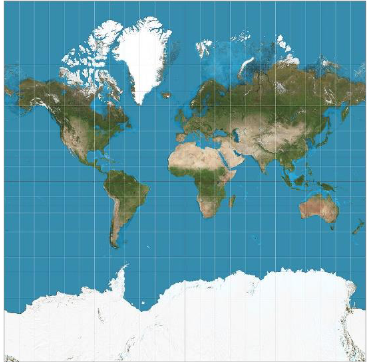
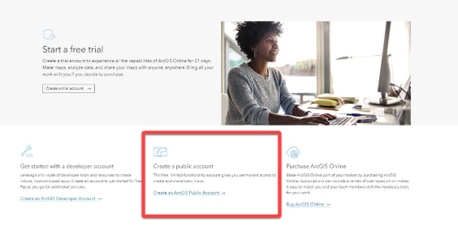
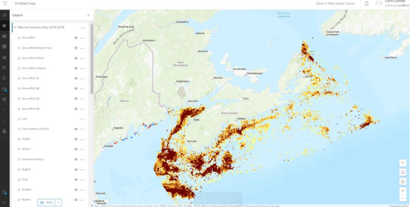
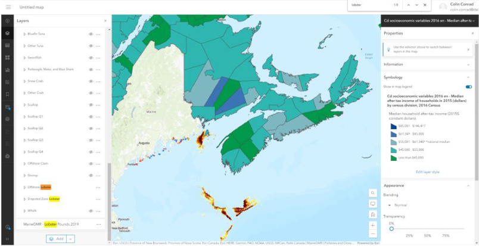

13 Visualizing geospatial data
This chapter is taken integrally from Chapter 7 of the Snappy Data Management textbook by Colin Conrad. It was copied here simply for ease of access.
13.1 Geospatial Data: There is a Time and a Place for Everything
Data is not just valuable because it supports better decisions; it can also enable new types of experiences. In 2016, the Niantic corporation released Pokémon Go, an augmented reality (AR) mobile game that uses global positioning systems (GPS) to locate, capture and battle virtual creatures from the popular Pokémon franchise [67]. The game took the world by storm, having been downloaded more than 800 million times by 2018, and it continues to have a dedicated fan base to this day [68]. While Niantic’s previous location-based mobile games, such as Ingress, managed to gather a small following, no other application had then gathered such widespread appeal. The success of Pokémon Go was a factor that inspired new interest in augmented and virtual reality devices, such as the development of Oculus Rift and Apple Vision Pro.
This success demonstrated something deeper than new market opportunities, however. At its height, the game shifted human mobility and identified limitations in the design of whole cities [69]. The geospatial data generated by Niantic’s games can be used to improve transportation methods and have informed new approaches to pedestrian design. However, the data are also used to inform how long people are physically located in specific places, which can be complemented with your other advertising identifiers to conduct location-targeted advertising or promotion events [70]. Niantic is not the first company to integrate geospatial and social data, though they were among the first to do this at scale by using a highly interactive and innovative AR experience.
Geospatial data such as that generated by GPS can be used to tell stories about our lives that other types of data cannot. It needs special consideration in our wider conversation about data, its uses, its visualization, and its management. In this chapter, we will discuss some of the unique features of geospatial data and why it matters.
13.1.1 What’s So Special about Geospatial Data?
Geospatial data is not that different from other types of data, other than the fact that it is usually anchored to a specific point in space. When geospatial data is organized properly, it usually contains at least two dimensions:
Horizontal data, which determines where on the Earth’s surface something is (x, y).
Vertical data, which determines an elevation (z).
Combinations of these values can be used to determine where in the world something is. Data can be linked to coordinates to provide unique insights about space.
Most of the time, geospatial data is best visualized using a map, either as a set of physical pictures or a digital space. As mentioned in Chapter 6, human brains are not well-suited to reading raw data and it is usually better to visualize data so that it can be interpreted. In the case of geospatial data, a tool like a map is usually better suited to our way of conceptualizing the data. The theory of cognitive fit has been used to explain why some types of information technology tools work better for our brains than others [71]. Some visualizations better “fit” our cognitive models for the data than others. In the case of geospatial data, a map better fits our conception than (say) a bar chart. This explains why geographic information systems (GIS) are the preferred tool for working with this type of data [72].
Most GIS software organizes data in 2D or 3D space often based on coordinates provided in the data (x, y, z). Data is generated either from the air or the ground using these coordinates as anchors. GIS then usually helps users make sense of the world using layers—collections of different varieties of data anchored to those coordinate points. By stacking layers, a user can develop insights about a space that they would otherwise not have been able to. For example, by observing layers related to traffic patterns and bus stop locations, an entrepreneur might be able to find a great location to locate a Starbucks.
13.1.2 The Power and Limitations of Integrated Geospatial Data
The information generated from geospatial data is particularly powerful when it is integrated with other human information, such as that derived from social and psychographic (ie., activities, interests, and opinions) data. Marketing tools such as Environics PRIZM provide insights about customer segments, derived from demographics, consumer behaviour, and geographic data [73]. PRIZM segments the Canadian postal codes into 67 lifestyle profiles, and marketers can use this information to provide location-informed marketing campaigns. This is particularly useful for retailers who provide in-person goods or services. Similar geospatially focused marketing data can be further used to perform targeted marketing, reducing the costs to acquire a customer. Governments might also use geospatial information to make decisions about where to locate services, such as schools or hospitals.
The use of geospatial information has not been without criticism. Maps and geospatial information have been used to justify actions by those in power, often to the disadvantage of those who did not have input into the information. The subfield of critical cartography has thus been formed to challenge the ways that maps have been used to justify biased decisions [74]. For example, while Google Maps remains a very popular GIS, the decision to feature location markers selected by Google is often decided based on their commercial or political value [75]. Furthermore, Google’s choice to employ the Mercator projection (until recently) disproportionally emphasizes spaces of countries near the poles versus near the equator. This limits the ability of non-commercial groups and disenfranchised interests to gain visibility on the platform and may disproportionately emphasize the importance of northern countries. Figure 7.1 demonstrates the Mercator projection, which overemphasizes Canada, Russia, and Greenland, and underemphasizes the size of Africa and South America [76].

Figure 7.1 - A Mercator projection of the world
By observing the dynamics of geospatial data, we can better understand the world we live in. In this sense, geospatial data holds unique value and plays a special role in our lives.
13.2 Hands-on Exercise: Visualize the Impact of Fisheries in Nova Scotia
In this exercise, we will extend our foundation in visual analytics and explore the lobster industry, an important economic driver of Nova Scotia. In 2018, Canada exported more than 12 million pounds of lobster, representing a market value of more than $223 million [77]. However, it’s one thing to understand figures and quite another to understand how it impacts the lives of specific communities. Fortunately, GIS is here to help.
Esri is one of the world’s leading GIS companies. Its flagship ArcGIS product is used for making maps, analyzing map information, and easily navigating map systems. If an organization wanted to understand the impact of the lobster industry on rural regions in Atlantic Canada, GIS could offer many solutions. I will assume that you are using ArcGIS to generate information related to the lobster fishery and understand whether this industry has an impact on rural Atlantic Canadians. By doing this, we can observe not just the potential of GIS, but also the functionality of an analytics web application supported by a REST API, similar to what we explored in Chapter 3.
13.2.1 Get started with ArcGIS
Before we can dig into the problem, we first need to familiarize ourselves with ArcGIS. Visit the ArcGIS Online website and create a free account using an email address.
ArcGIS is a powerful proprietary web-based tool that is commonly used in industry. Fortunately, it also has a public version, which will give users limited functionality for free. Create a new account and refer to Figure 7.2 for more details.
13.2.2 2. Access the easy data
We should start by making a map. Once logged in to ArcGIS Online, click “Map” from the top menu bar to reveal a map with the base topographic layer. The concept of a layer is important in GIS. Layers are the way that information is added to ArcGIS maps and are derived either from a local or external data set. Layers add information similarly to the way that artists add information to a painting; more layers are not necessarily better, but layers are often needed to capture the complexity of the story. Esri provides good resources for learning more about layers [78].
We can add layers using the “Add” icon on ArcGIS Online’s top menu. You can add layers by uploading files, using web application programming interface (API) links, or by searching for files contained in Esri’s public databases. Start by searching the term “lobster” and see what happens. Be sure to specify “ArcGIS Online” as your search option using the submenu above the search bar. You will find that there is remarkably little data provided by Canadian organizations, but a few from the USA.
Look for the MaineDMR Lobster Pounds – 2019 dataset. Add this to your map and see where the lobster pounds are populated. This will instantly populate your map with the locations of lobster pounds from the State of Maine, demonstrating how easy it is to layer data in a GIS.

Figure 7.2 - Create a public account and follow the steps explained in your email
13.2.3 Link ArcGIS to open data
ArcGIS also makes good use of REST APIs to make it easy to visualize data. The Canadian government may not make its government accessible through the Esri search service, but it does provide considerable open map data in an API through its website: https://open.canada.ca/en/open-data.
As we saw in Chapter 4, you can visit the Government of Canada’s open data website and search for data that might be useful to you. For instance, if we search “lobster”, we should be presented somewhere with “Maritimes Region Fisheries Atlas: Catch Weight Landings Mapping (2014-2018)”. Click on this link. Near the bottom of this page, you should find “Data and Resources” which allows you to access data in ESRI REST format. Click on the link to be brought to the server’s web page. Copy the URL and then return to ArcGIS.
Back in ArcGIS, click the “add” icon again, this time adding a layer from a URL. When asked for a URL, paste the link that you just copied from the Government of Canada Portal. This will copy a large number of layers under “Marine Fisheries Atlas 2014 2018”. If you expand this layer you will find several sublayers. By selecting these sublayers, you will demonstrate the location of the catch of the various fish, such as Cod shown in Figure 7.3.

Figure 7.3 – Cod catch locations
13.2.4 Find and incorporate income data
The real power of ArcGIS is not in visualizing one dataset, but in combining them. Let’s now combine both regional income and lobster data. Using the Canada Open Data Portal, retrieve the ESRI REST link for a data set called “Median after-tax income for households in 2015 (dollars) by census division, 2016 Census”. You might have to refine your search to ESRI REST format types using the search bar to the left of the search results. Add the data via URL as a new layer. Consider selecting only the Offshore Lobster and Disputed Zone Lobster You should have a similar visualization as provided in Figure 7.4. Do you think there is a story to be told with these images?

Figure 7.4 - Median household income and offshore lobster, visualized
13.2.5 Conclusion and credit exercises
This brings us to the end of this exercise. To recap, by completing this exercise, you will have used ArcGIS Online to visualize both income and fisheries data to tell a story. In doing so, you put your knowledge about REST APIs to work in the context of a leading analytics tool. I welcome and encourage you to play around with ArcGIS to create interesting visualizations.
If you are completing this exercise as part of a course, please see your learning management system for the graded exercise questions.